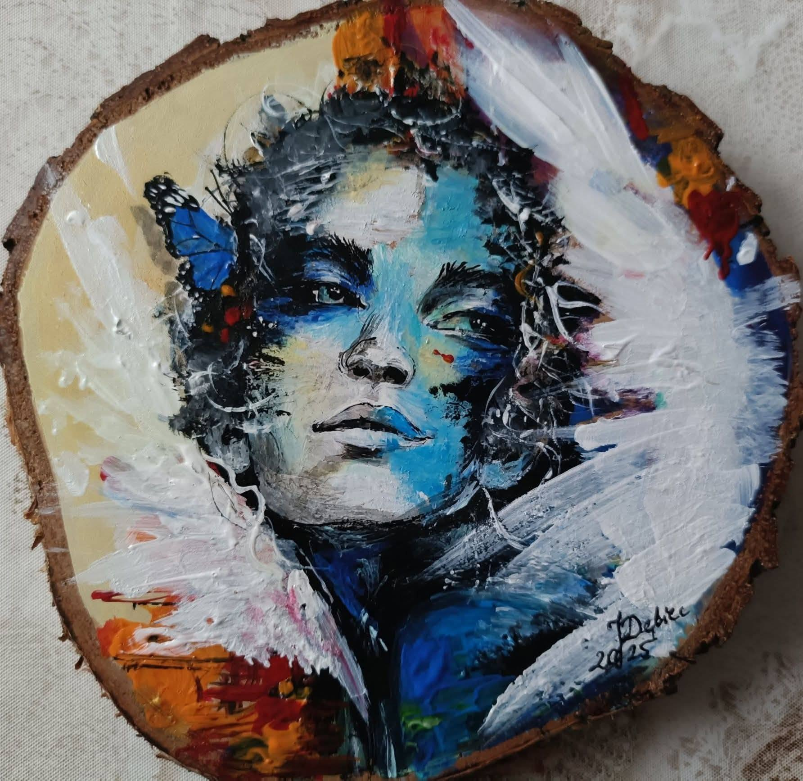
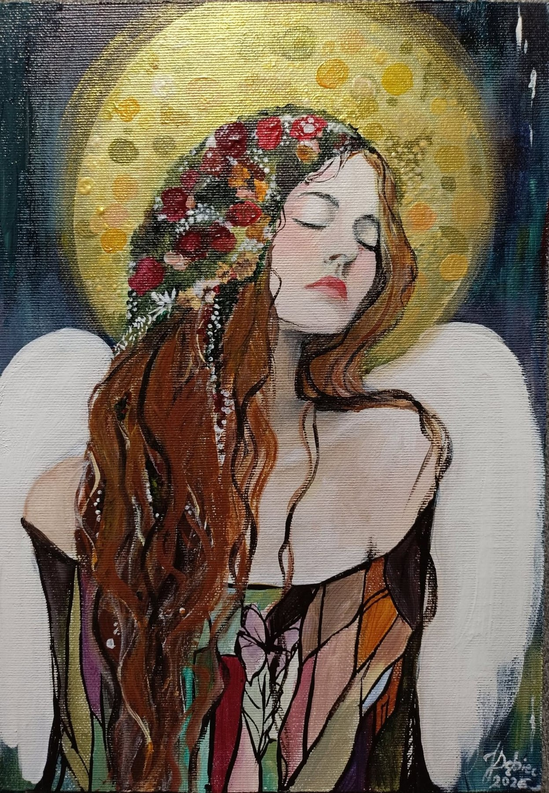
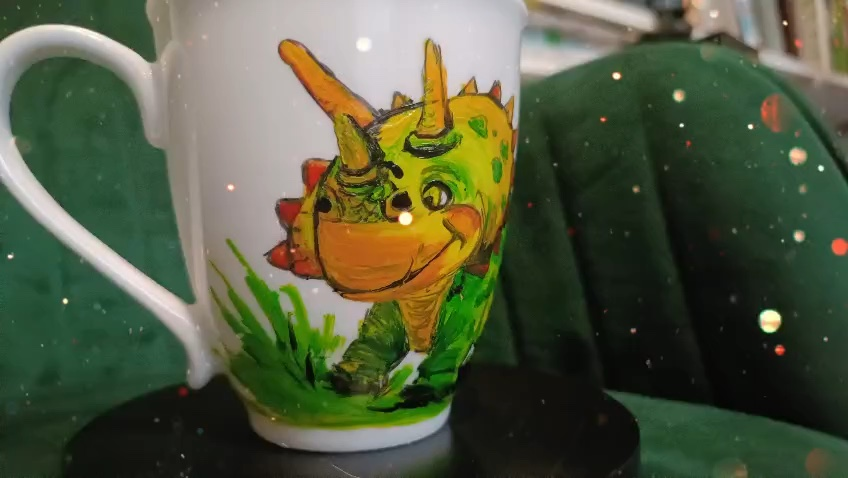
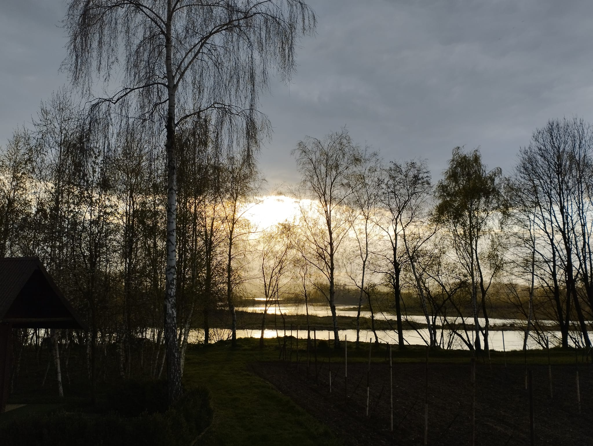

01 Mural w szkole · Tymowa
Słoneczniki — z sercem dla szkoły
Słoneczniki i roślinne detale otaczają nazwę szkoły oraz pamiątkową tablicę. Zobacz gotową kompozycję i moment jej powstawania.

Joanne-Art · pracownia artystyczna
Autorskie murale, obrazy i anioły. Tworzone ręcznie, z uważnością na miejsce i ludzi.
Z bliska i w całości
Najpierw gotowa praca. Potem detale, skala i chwile z malowania. Zajrzyj bliżej — każde zdjęcie możesz powiększyć.
01 Mural w szkole · Tymowa
Słoneczniki i roślinne detale otaczają nazwę szkoły oraz pamiątkową tablicę. Zobacz gotową kompozycję i moment jej powstawania.
02 Mural we wnętrzu
Wielkoformatowe kwiaty malowane bezpośrednio na ścianie. Ujęcie z Joanną pozwala zobaczyć skalę całej kompozycji.
Poznaj moją twórczość
Od wielkoformatowych murali po małe przedmioty tworzone ręcznie. Każda dziedzina ma własny rytm, materiał i historię.
Przestrzeń i opowieść
Płótno i drewno

Nowe w galerii03Symboliczne postacie

04Przedmioty z charakterem

05Światło i natura
O mnie
Maluję, bo wierzę, że kolor może zmienić sposób, w jaki czujemy się w danym miejscu.
Inspirują mnie natura, baśnie i ludzkie historie. Pracuję zarówno w kameralnej skali obrazu, jak i na dużych ścianach. Każda praca ma być naprawdę czyjaś.
Opowiedz mi o swoim pomyśle →Od pomysłu do rozmowy
Nie potrzebujesz gotowego projektu. Wystarczy kierunek, inspiracja albo praca, która przyciągnęła Twoją uwagę.
Wskaż pracę z portfolio lub opisz motyw, kolor i nastrój, który masz na myśli.
Przy muralu podaj miejscowość, przybliżony wymiar ściany i dodaj zdjęcie przestrzeni do e-maila.
Napisz, na czym Ci zależy i czy masz planowany termin. To dobry początek rozmowy o możliwościach.
Współpraca
Napisz, co chcesz stworzyć, gdzie i w jakiej skali. Możesz dołączyć zdjęcie przestrzeni lub nazwę wybranej pracy z portfolio.
daridebiec@gmail.com